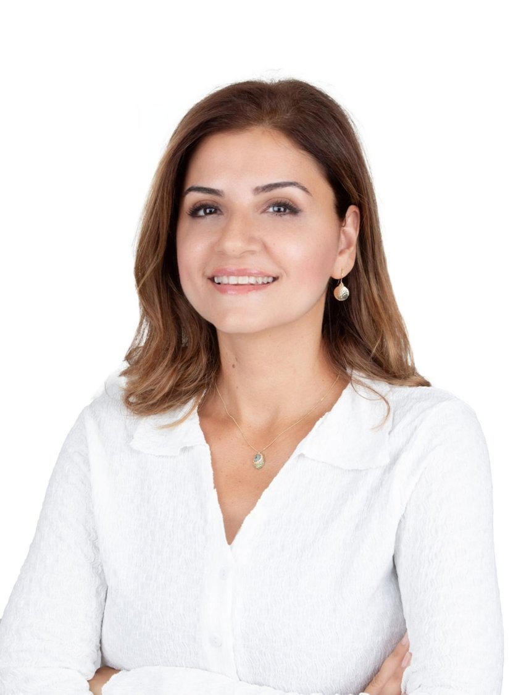

Bilişsel Davranışçı Terapi ve Şema Terapi alanlarında uzmanlaşmış Klinik Psikologum. Bireysel, çocuk/ergen ve online seans hizmetleri sunuyorum.
Randevu AlKaygı, depresyon, öz-saygı ve kişisel gelişim konularında birebir terapi desteği.
Gelişim, okul, aile ilişkileri ve duygusal zorluklar üzerine çalışma.
Nerede olursanız olun, güvenli ve esnek görüntülü görüşme seansları.
17 yıl süren çalışma hayatımda çeşitli işletmelerde İnsan Kaynakları departmanında görev aldım; işe alım, eğitim, performans ve verimlilik süreçlerinde çalıştım. 2020 yılında Psikoloji alanında ikinci üniversitemi okumaya başladım. 2024 yılında Fakülte ve Bölüm Birinciliği ile eğitimimi tamamladım ve Klinik Psikoloji yüksek lisansımı bitirdim. Bilişsel Davranışçı Terapi ve Şema Terapi ekollerinde Türkiye'nin önde gelen hocalarından eğitimler aldım. BDT Süpervizyon sürecimi tamamladım.
Gündelik hayatta kaygıyı fark etmek ve yönetmek için pratik yaklaşımlar.
Ebeveynler ve ergenler arasında sağlıklı köprüler kurmak.
Düşünce kalıplarımızın davranışlarımıza etkisi ve BDT perspektifi.